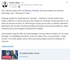

Łukasz Blog - Cybersecurity

From the series ‘Sensations of the 20th century’ - LLM has detected a buffer underflow exploit in SQLite..
Ohmyhack 2024
Let's meet Ohmyhack 2024
Cyber Defence Forces - Passwords